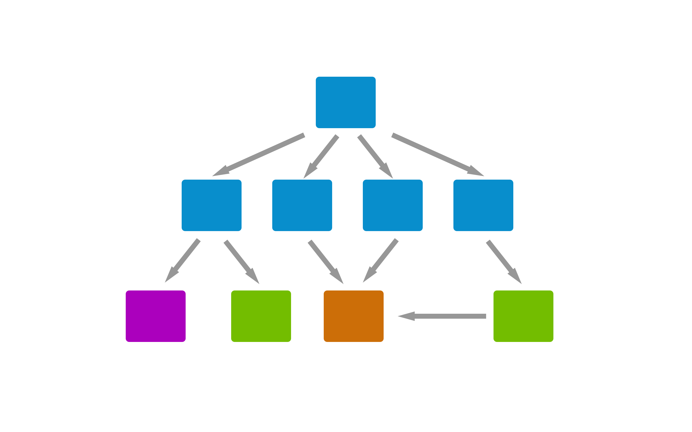
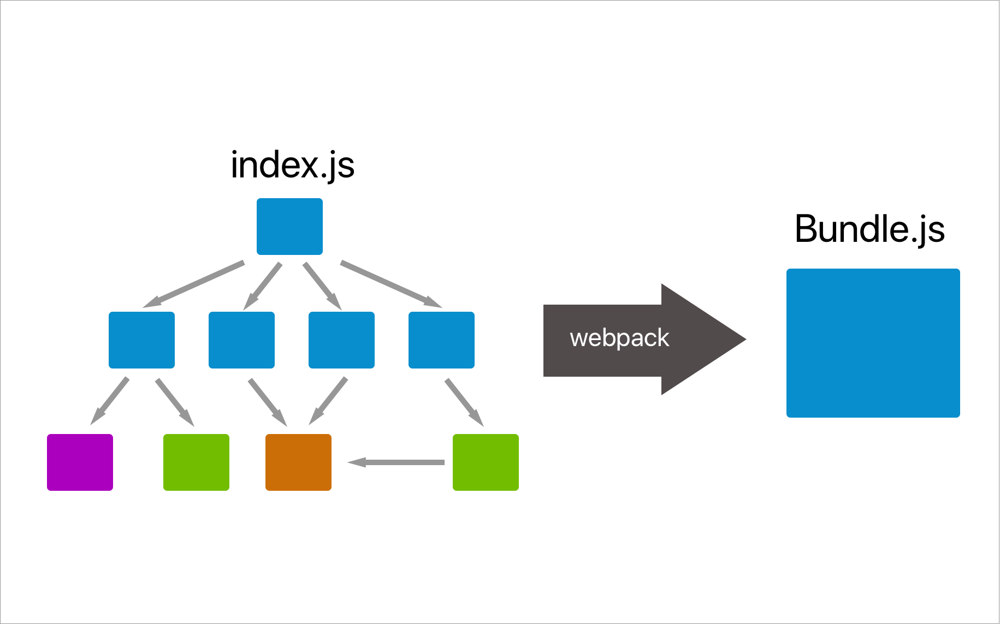
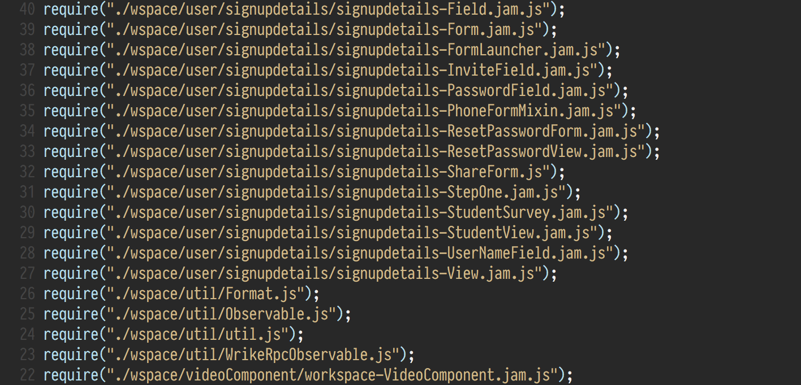

Рефакторинг клиентского кода или как отрефакторить миллион строк кода и не сойти с ума
Алексей Золотых, Wrike
Про нас
- 2 000 000 строк кода
- Измененные библиотеки под VCS
- 50 разработчиков, которые постоянно пишут фичи
- В коде много глобальных переменных
Рудольф Клаузиус
1822 — 1888
Второе начало термодинамики
Закон неубывания энтропии
Живи полной жизнью
Рефакторить фронтенд сложно
Основные причины
- Минимум 3 контекста:
html, css, js , less, stylus, typescript, jade, jsx - Контексты плохо связаны между собой
Острожно!
Не стоит все писать на JS, это может навредить вашему фронтенду!

Чем чаще, тем меньше проблем
- Меньше изменений — меньше ошибок
- Вы всегда в контексте
- Отделу тестирования не нужно тратить много времени
- Бизнес не заметит подвоха
Часто — тоже плохо

Правило туриста СССР
полянку нужно оставить чище, чем она была
— Давайте договоримся приводить в порядок код постепенно!
— Настроим статическую проверку код и внедрим ревью изменений!
— Будем выделять на это 10% времени и рефакторить
Решение - ДТПП
Добрые туристы по принуждению!
Git hooks + статический анализ кода

— Нет времени объяснять...
— Нужен коммит
— Мы не можем разрабатывать, все время срабатывают линтеры
Тренировка и еще раз тренировка!
Рефакторинг, когда поздно пить Боржоми

Наша ситуация

Недостатки
- Глобальная область видимости
- Долгая сборка и пересборка
- Легаси в коде
webpack
webpack
Консоль
find . -name '*.js' | sed 's/\(.*\)/require("\1");/g'
Формируем index.js
Нам поможет IDE!
Иногда, в бою, это почти всегда не работает
Внезапно в проекте больше 1000 файлов + 100 soy шаблонов
Кол-во связей зашкаливает
Что делать с soy?
- Собирается в пакетном режиме
- Шаблоны зависят друг от друга
- Для сборки нужна java
- Еще один синтаксиc
Пишем плагин для webpack
- Плагин собирает файлы пакетно и сохраняет их во временную папку
- Лоадер берет файлы из временной папки
Проблемы
- Плагин должен стабильно работать в Windows, Linux, MacOS
- Сборка работает долго
У вас не будет проблем с soy, если у вас не будет soy
Может имеет смысл использовать нативные es шаблоны
function template(title) {
return '' + title + ''
}function template(title) {
return '<div>' + title + '</div>'
}
`${title}``
${title}
`function template1(){
let output = '<div>';
for (let i = 0; i < items.length; i++) {
let item = items[i];
output += ...
}
output += '</div>';
return output;
}
function template1(){
let output = '<div>';
for (let i = 0; i < items.length; i++) {
let item = items[i];
output += ...
}
output += '</div>';
return output;
}
Жизнь не обязана быть идеальной, чтобы быть удивительной
Рефакторинг на основе AST
(Абстрактное синтаксическое дерево)

grasp
npm install -g grasp
CSS подобный синтаксис
$ grasp 'if.test[op=&&]' a.js
2: if (x && f(x)) { return x; }
4: if (x != j) { return 'test'; }
5: if (xs.length && ys.length) {
10: if (x == 3 && list[x]) {
$ grasp 'if.test[op=&&]' a.js
2: if (x && f(x)) { return x; }
4: if (x != j) { return 'test'; }
5: if (xs.length && ys.length) {
10: if (x == 3 && list[x]) {
$ grasp 'if.test[op=&&]' a.js
2: if (x && f(x)) { return x; }
4: if (x != j) { return 'test'; }
5: if (xs.length && ys.length) {
10: if (x == 3 && list[x]) {
$ grasp 'if.test[op=&&]' a.js
2: if (x && f(x)) { return x; }
4: if (x != j) { return 'test'; }
5: if (xs.length && ys.length) {
10: if (x == 3 && list[x]) {
$ grasp 'if.test[op=&&]' a.js
2: if (x && f(x)) { return x; }
4: if (x != j) { return 'test'; }
5: if (xs.length && ys.length) {
10: if (x == 3 && list[x]) {
$ grasp 'if.test[op=&&]' a.js
2: if (x && f(x)) { return x; }
4: if (x != j) { return 'test'; }
5: if (xs.length && ys.length) {
10: if (x == 3 && list[x]) {
$ grasp 'if.test[op=&&]' a.js
2: if (x && f(x)) { return x; }
4: if (x != j) { return 'test'; }
5: if (xs.length && ys.length) {
10: if (x == 3 && list[x]) {
Поиск по шаблонам
$ grasp -e 'return __ + __' b.js
3: if (x < 2) { return x + 2; }
13: return '>>' + str.slice(2);
15: return f(z) + x;
$ grasp -e 'return __ + __' b.js
3: if (x < 2) { return x + 2; }
13: return '>>' + str.slice(2);
15: return f(z) + x;
$ grasp -e 'return __ + __' b.js
3: if (x < 2) { return x + 2; }
13: return '>>' + str.slice(2);
15: return f(z) + x;
Рефакторинг
if (y < 2) {
window.x = y + z;
}
$ grasp '[left=#y]' --replace 'f({{}})' f.js
if (y < 2) {
window.x = y + z;
}
$ grasp '[left=#y]' --replace 'f({{}})' f.js
if (y < 2) {
window.x = y + z;
}
$ grasp '[left=#y]' --replace 'f({{}})' f.js
if (y < 2) {
window.x = y + z;
}
$ grasp '[left=#y]' --replace 'f({{}})' f.js
if (y < 2) {
window.x = y + z;
}
$ grasp '[left=#y]' --replace 'f({{}})' f.js
if (y < 2) {
window.x = y + z;
}
$ grasp '[left=#y]' --replace 'f({{}})' f.js
$ grasp '[left=#y]' --replace 'f({{}})' f.js
if (f(y < 2)) {
window.x = f(y + z);
}
$ grasp '[left=#y]' --replace 'f({{}})' f.js
if (f(y < 2)) {
window.x = f(y + z);
}jscodeshift
jscodeshift is a toolkit for running codemods over multiple JS files.
https://github.com/facebook/jscodeshiftCodemods
module.exports = function(fileInfo, api) {
return api.jscodeshift(fileInfo.source)
.findVariableDeclarators('foo')
.renameTo('bar')
.toSource();
}
Codemods
module.exports = function(fileInfo, api) {
return api.jscodeshift(fileInfo.source)
.findVariableDeclarators('foo')
.renameTo('bar')
.toSource();
}
Codemods
module.exports = function(fileInfo, api) {
return api.jscodeshift(fileInfo.source)
.findVariableDeclarators('foo')
.renameTo('bar')
.toSource();
Codemods
module.exports = function(fileInfo, api) {
return api.jscodeshift(fileInfo.source)
.findVariableDeclarators('foo')
.renameTo('bar')
.toSource();
Готовый сборник рецептов
https://github.com/cpojer/js-codemod
- var в const или let.
- Обратные вызовы в cтрелочные функции
- Строки в шаблоны
А что же стало с глобальными именами?
script-loader
Ваш скрипт выполняется один раз в глобальном контексте
script-loader 💩
expose-loader
Добавляет модуль в глобальный конектст
require("expose-loader?$!jquery");
...
constructor: function(arguments) {
arguments.store = this._escapeValue(arguments.store);
$wspace.task.customfields.ComboBoxField.superclass
.constructor.call(this, arguments);
},
...
...
constructor: function(arguments) {
arguments.store = this._escapeValue(arguments.store);
$wspace.task.customfields.ComboBoxField.superclass
.constructor.call(this, arguments);
},
...
- Stylus
- LESS
- CSS
Stylus → CSS + комменатрии
...
color: blue
}
/* $$$ file1.stylus */
.my-awesome-class {
color: red;
....
...
color: blue
}
/* $$$ file1.stylus */
.my-awesome-class {
color: red;
....
Stylus → CSS
Stylus → CSS → PostCSS
POSTCSS + plugins
- Убрать дублирование стилей
- Уменьшить разброс цветов
- Убрать префиксы
- Выделить новые переменные
POSTCSS в сборку
Stylus → CSS → PostCSS
Stylus → CSS → PostCSS → CSS 🔥
Stylus → CSS → PostCSS → CSS 🔥 → Less
Stylus → CSS → PostCSS → CSS 🔥 → Less 😇
Мердж изменений — очень больно
Gulp
gulp.task('refactor', function () {
return gulp.src('folder/**/*.js')
.pipe(RefactoringPlugin())
.pipe(gulp.dest('./'))
})
Если что-то пошло не так, то
$ git reset --hard
$ git merge origin/master
$ gulp refactor
Баги не всегда очевидны


А вы вообще уверены что это баг?!
— Мы подумали и решили, что красный цвет лучше!

Иногда менеджеры должны быть в курсе дел
Спасибо за внимание!
Вопросы!

email: aazolotyh@gmail.com